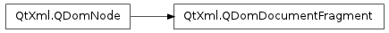

QDomDocumentFragment ¶

Detailed Description ¶
The PySide.QtXml.QDomDocumentFragment class is a tree of QDomNodes which is not usually a complete PySide.QtXml.QDomDocument .
If you want to do complex tree operations it is useful to have a lightweight class to store nodes and their relations. PySide.QtXml.QDomDocumentFragment stores a subtree of a document which does not necessarily represent a well-formed XML document.
PySide.QtXml.QDomDocumentFragment is also useful if you want to group several nodes in a list and insert them all together as children of some node. In these cases PySide.QtXml.QDomDocumentFragment can be used as a temporary container for this list of children.
The most important feature of PySide.QtXml.QDomDocumentFragment is that it is treated in a special way by QDomNode.insertAfter() , QDomNode.insertBefore() , QDomNode.replaceChild() and QDomNode.appendChild() : instead of inserting the fragment itself, all the fragment’s children are inserted.
- class PySide.QtXml. QDomDocumentFragment ¶
- class PySide.QtXml. QDomDocumentFragment ( x )
-
Parameters: x – PySide.QtXml.QDomDocumentFragment Constructs an empty document fragment.
Constructs a copy of x .
The data of the copy is shared (shallow copy): modifying one node will also change the other. If you want to make a deep copy, use PySide.QtXml.QDomNode.cloneNode() .